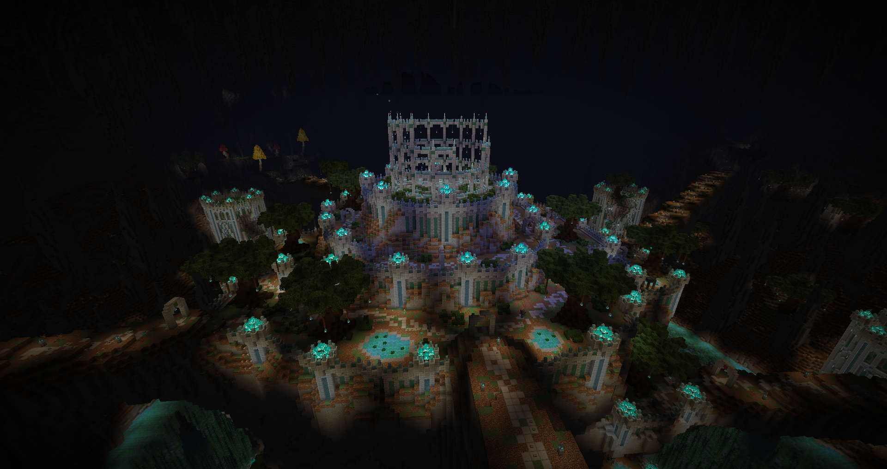
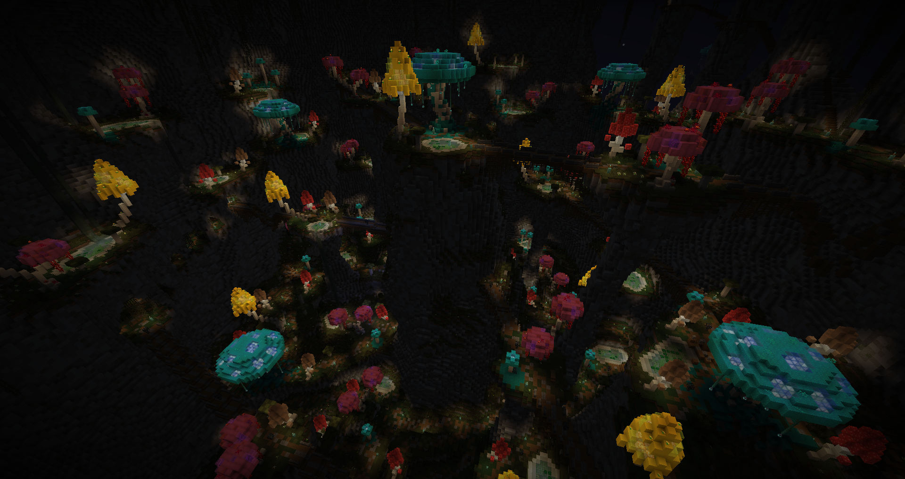
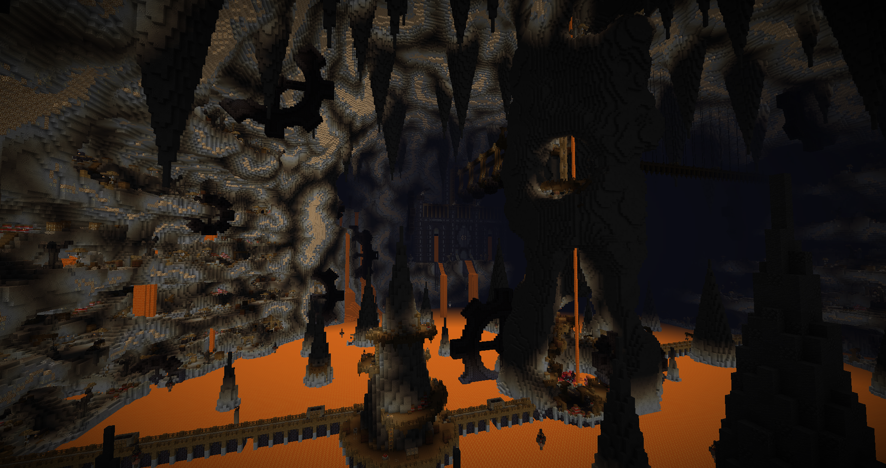
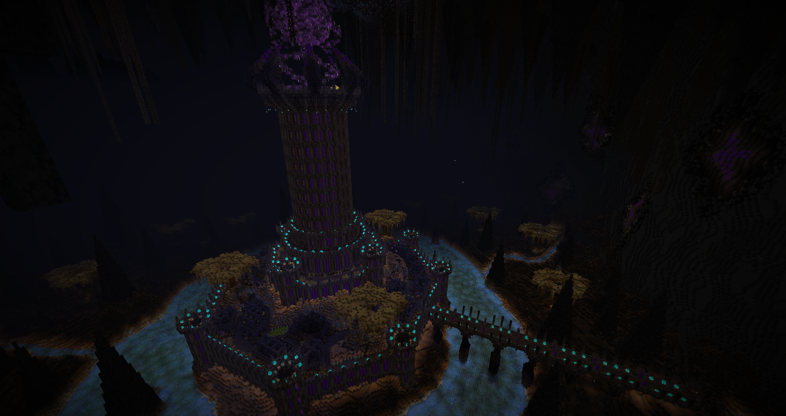
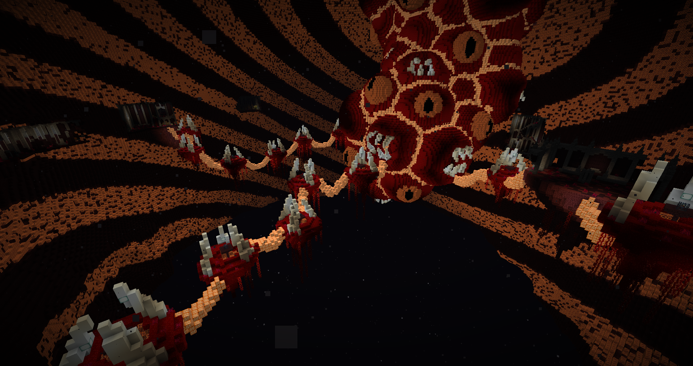
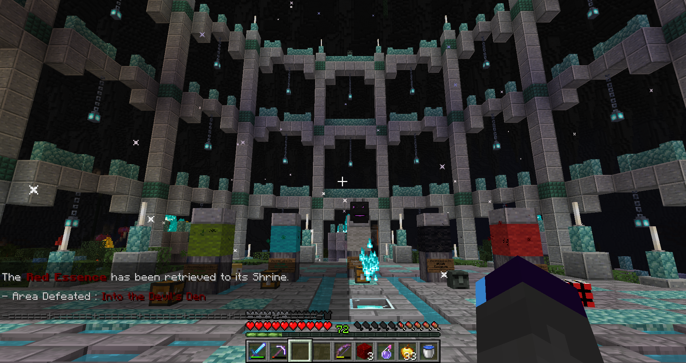

Map Author: ZeyD_
Origin: Map Link
Versions: MC = 1.16.5
Presentation
Saturnine Memories is a medium length CTM map. It is in hub style with all areas available from the monument area.
This was done with a beta version, so some things might have changed since.
Overview
Monument

The start is nice and chill, with no lack of resources although we don’t have access to stone yet. The elite mob just incentivized not fighting it because of corpse crawler and I ended up sending them into holes.
Bigger than usual monument areas, it’s a nice central hub although with some extra walking. I do have to complain about the bonus monument and trader being too far from the base.
Green

This area has an interesting mix of paths, buildings and temple to explore. But it’s not perfect as it lacks variance in those, after clearing a few buildings you’ll know the rest of them. It could benefit from having more handmade details to differentiate each, the human brain is very susceptible to repetition because it lowers the stimulation due to known patterns. Reaching the temple is refreshing.
The layout suffered also from being fairly mirrored, with several paths to the big temple where it obviously leads to the objective. Losing content as not many player will bother exploring it all. The inside of the temple also has some mirroring, but much less.
The mobs were all fine except the archers, which were annoying to deal with since they completely negated melee. This early in the map, it would’ve been preferable to have a lesser effect or another type. The golden sword was great.
Cyan

Here, the variance was better due to the path, but inversely, I feel like it could’ve had more building gameplay. Better details but lower level variance. Despite how confusing it looks, there is a main path to follow which leads to the objective. I feel sorry for the player if he decides to skip around the road though.
I appreciate the waterfalls to get back to where we are if we die, it really prevents nightmare scenarios near the end.
Despite being stronger, the archers felt better to fight because they would die without too much trouble, unlike the previous area. Found the best helmet as well.
Light Gray

My favorite area, it was fun and the mobs are nice(yes even the vexes!) to fight. It has great items, good mix of tunnels, platforms, mines and dungeon layout. And a strider safari bit, although it sadly isn’t really part of the path, it’s only for extra exploration. The shortcut use was smart although the placement of the crossroad can lead the player to just pillar up since the path leads away from the castle.
The only and best eruption pickaxe of the map.
Black

This area has the best visuals. The town in the fortress outskirts has fun personalization of the buildings. Although comes back the problem from Green, it lacks variance for the interiors in gameplay. The upper fortress was great and the mean invisible crawling labyrinth was worth the torture!
Combat was a bit let down for me, with mostly tanky mobs and no effective weapon(except a rare one).
Red

And so comes the final showdown. And if the previous area was the best visually, this one has the best vibe(the heartbeats were great). The hyper cousin of Horrifeye’s last area, which are legally unaffiliated, holds the toughest combat and best gear.
The use of keys was appropriate for the layout and was clear enough to avoid ending at a loss. Void was present, but never as an unfair threat.
Conclusion

For starters, everything looks breathtaking. The building style has clear inspirations from Ragecraft and Simulation Protocol and it looks gorgeous. It is clear that artistic direction is the main strength here, but the custom items and mobs weren’t half bad either.
Although this is also where the entropy syndrome appears; due to aesthetics being prioritized, the level layout suffers in gameplay. It consisted mostly in spawners trailing on the path, which while not bad, lacks of unique level design strength. On the other hand, the signs indicating it wasn’t worth going in the decorations were greatly appreciated. Being unsure of the mapmaker’s intentions in terms of loot and secrets is vital to avoid pointless trekking.
The custom formatting on the items meant that you weren’t able to see changes when using the anvil, making it hard to track or even not aware of it even working. A sacrifice for looking nice.
That one is more of a personal style, the mobs were overall more tanky but with shorter detection range, so it makes sense they have to be tougher to prevent rushing down. I find it less stimulating because you have to approach the spawners to initiate combat, making it a more passive flow. While I have the tendency to make weaker mobs that die faster, but have a much bigger detection range, creating an engaging pressure to deal with. But that’s how tastes work.
The conclusion might sound negative overall, but that’s because I pointed out the flaws in priority. Feedback is important to figure out what worked and what didn’t. And with this, I can safely say that it is an impressive second map, and that overscope will be booted far away for the future. Savor it so you don’t burn your tongue.